knitr::opts_chunk$set(cache = TRUE, cache.lazy = FALSE, warning = FALSE,
message = FALSE, echo = TRUE, dpi = 180,
fig.width = 8, fig.height = 5)
pacman::p_load(tidyverse ,tidymodels,klaR, discrim, themis, finetune, FactoMineR,xgboost )Classificação
dados_prontos <-
readr::read_csv("dados_limpos.csv")
dados_prontos <-
dados_prontos %>%
dplyr::select(-1) %>%
mutate(
across(where(is.logical), as.integer)
)Classificação
O algoritmo Naive Bayes assume independência entre as características (variáveis preditoras) do conjunto de dados, o que nem sempre é verdade na prática. Apesar dessa simplificação, o algoritmo Naive Bayes é eficaz em muitos cenários e é especialmente útil para classificação de texto e problemas com muitas características.
verificar independencia das variáveis
Para verificar a independência das variáveis eu vou usar Análise de Correspondência Múltipla (MCA).
mca_result <- FactoMineR::MCA(dados_prontos, graph = FALSE)# Gráfico de Correlação
FactoMineR::plot.MCA(mca_result, choix = "var")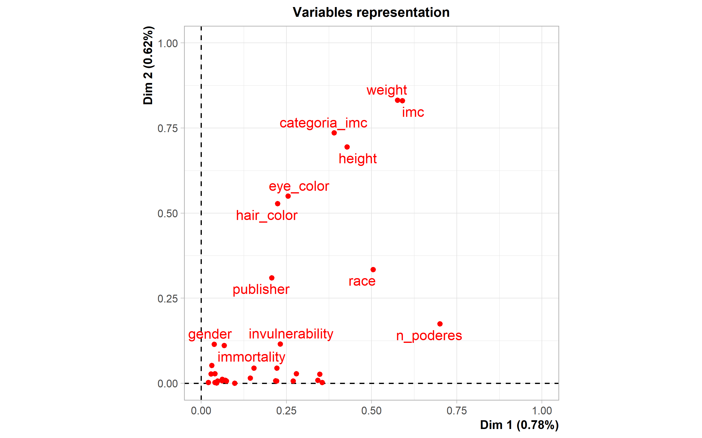
# Gráfico de Correlação
FactoMineR::plot.MCA(mca_result, choix = "ind")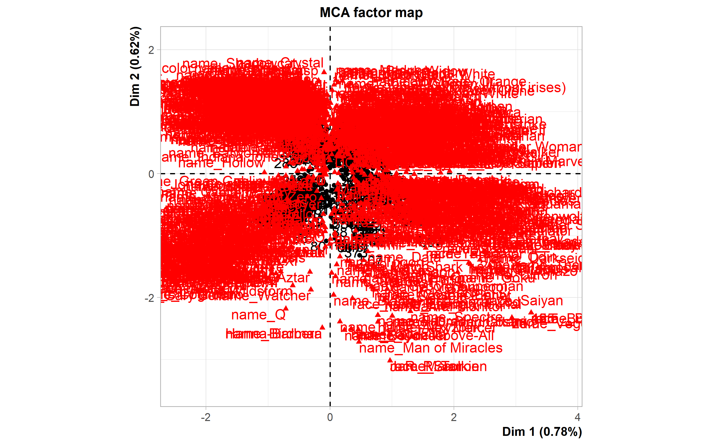
A análise realizada indica que os dados não atendem ao pressuposto do método Naive-Bayes. Além disso, é possível observar algumas características da estrutura dos dados. Mesmo com uma baixa variabilidade explicada pelas dimensões fatoriais, é possível compreender quais variáveis contribuem mais, a direção de suas contribuições e quais variáveis apresentam padrões de comportamento semelhantes.
EDA
Vou começar dando uma olhada na contagem da variável alvo.
dados_prontos %>%
count(alignment)# A tibble: 4 × 2
alignment n
<chr> <int>
1 bad 192
2 good 420
3 neutral 24
4 <NA> 7Uma questão que surgiu diz respeito a se o foco está exclusivamente em categorias “bom” e “mau”, ou se também inclui personagens neutros. Como a pergunta menciona “bom” ou “mau”, a decisão que vou adotar é não considerar os personagens neutros. Essa escolha é baseada em evitar o desafio de lidar com classes significativamente desequilibradas.
Vou começar selecionando apenas os personagens classificados como “bom” ou “mau”.
dados_naive <-
dados_prontos %>%
filter(alignment == "good" | alignment == "bad")%>%
mutate(
across(where(is.character), as.factor),
#across(where(is_logical), as.factor)
)Seleção de recursos
Vamos visualizar a distribuição da nossa variável alvo em relação às variáveis categóricas.
dados_naive %>%
tidyr::drop_na() %>%
count(alignment,gender) %>%
ggplot(aes(alignment,n, fill = gender))+
geom_col(show.legend = FALSE)+
facet_wrap(vars(gender),scales = "free")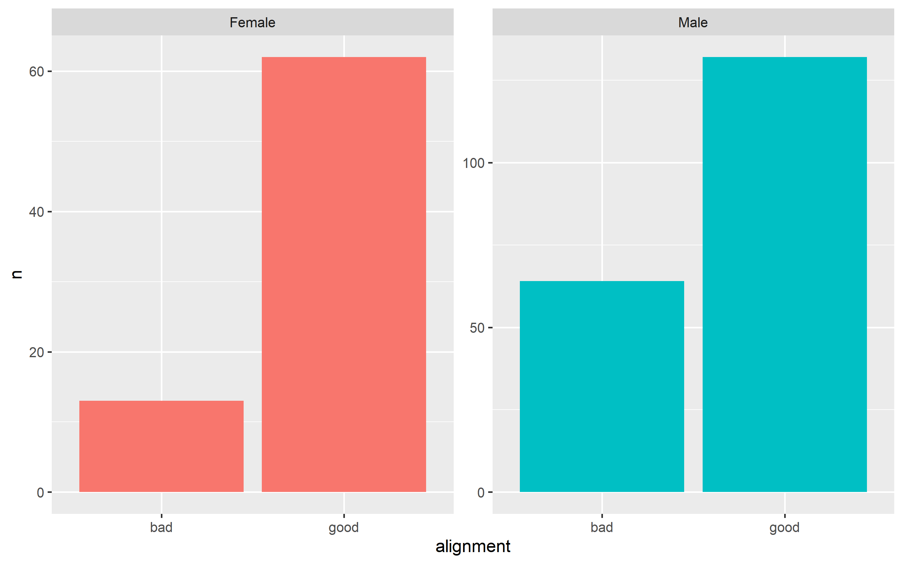
Em relação ao gênero, é possível observar um número maior de personagens “maus” no gênero masculino em comparação ao feminino. Esse tipo de padrão é benéfico para o aprendizado do nosso modelo. No entanto, a análise visual por si só não é suficiente. É necessário conduzir testes estatísticos para confirmar se essa diferença é estatisticamente significativa e se uma amostra diferente produziria resultados semelhantes. Isso nos permitirá determinar se de fato há uma proporção maior de personagens “maus” no gênero masculino do que no feminino.
Contudo, devido minha ingerência em relação ao tempo vou pular essa etapa e fazer algo não recomendável que é selecionar os recursos no “olhômetro”. Essa abordagem pode levar a resultados subótimos, ou mesmo ruins, uma vez que não há garantia de que as diferenças observadas sejam estatisticamente significativas ou realmente informativas para o modelo.
Nosso alvo em relação a cor dos olhos.
dados_naive %>%
tidyr::drop_na() %>%
mutate(
eye_color = fct_lump(eye_color, prop = 0.05)
) %>%
count(alignment,eye_color) %>%
ggplot(aes(alignment,n, fill = eye_color))+
geom_col(show.legend = FALSE)+
facet_wrap(vars(eye_color),scales = "free")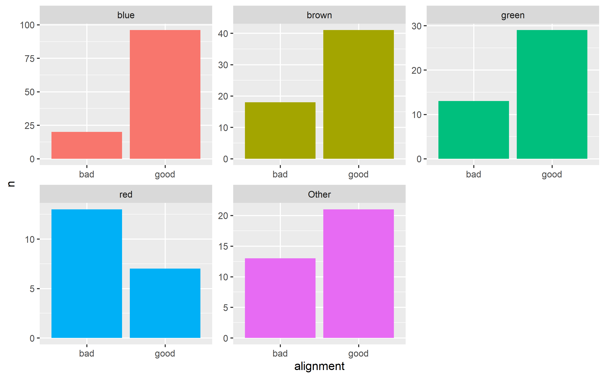
A variável “cor dos olhos” aparentemente apresenta padrões que o modelo pode utilizar para aprender. Portanto, vou optar por manter essa coluna no conjunto de dados.
dados_naive %>%
tidyr::drop_na() %>%
mutate(
race = fct_lump(race, prop = 0.05)
) %>%
count(alignment,race) %>%
ggplot(aes(alignment,n, fill = race))+
geom_col(show.legend = FALSE)+
facet_wrap(vars(race),scales = "free")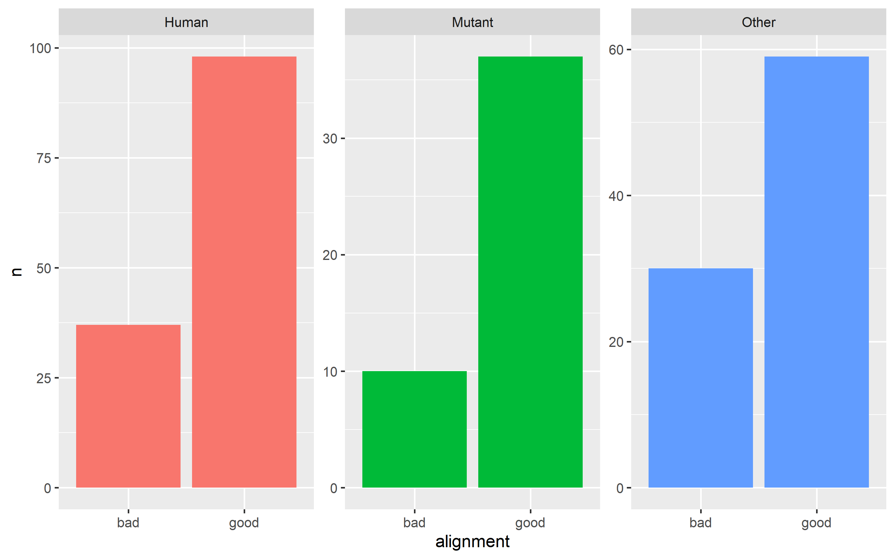
Parece que essa variável também contém estruturas que podem ser aproveitadas pelo modelo.
dados_naive %>%
tidyr::drop_na() %>%
mutate(
hair_color = fct_lump(hair_color, prop = 0.05)
) %>%
count(alignment,hair_color) %>%
ggplot(aes(alignment,n, fill = hair_color))+
geom_col(show.legend = FALSE)+
facet_wrap(vars(hair_color),scales = "free")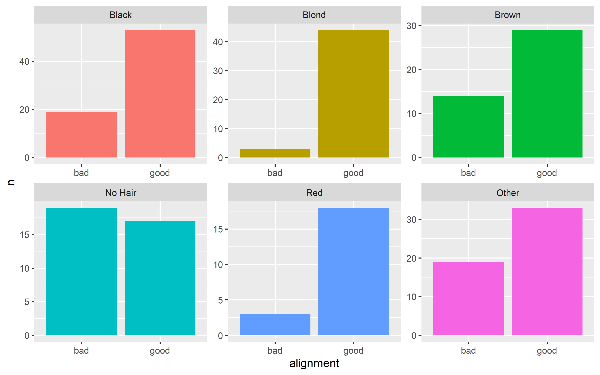
Essa variável também será mantida no conjunto de dados.
dados_naive %>%
tidyr::drop_na() %>%
mutate(
publisher = fct_lump(publisher, prop = 0.05)
) %>%
count(alignment,publisher) %>%
ggplot(aes(alignment,n, fill = publisher))+
geom_col(show.legend = FALSE)+
facet_wrap(vars(publisher),scales = "free")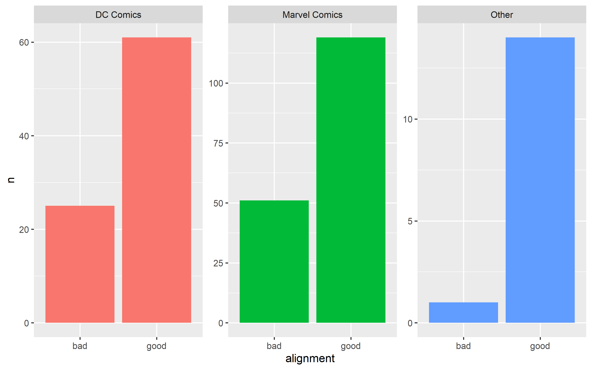
Essa variável também será mantida no conjunto de dados.
dados_naive %>%
tidyr::drop_na() %>%
mutate(
categoria_imc = fct_lump(categoria_imc, prop = 0.05)
) %>%
count(alignment,categoria_imc) %>%
ggplot(aes(alignment,n, fill = categoria_imc))+
geom_col(show.legend = FALSE)+
facet_wrap(vars(categoria_imc),scales = "free")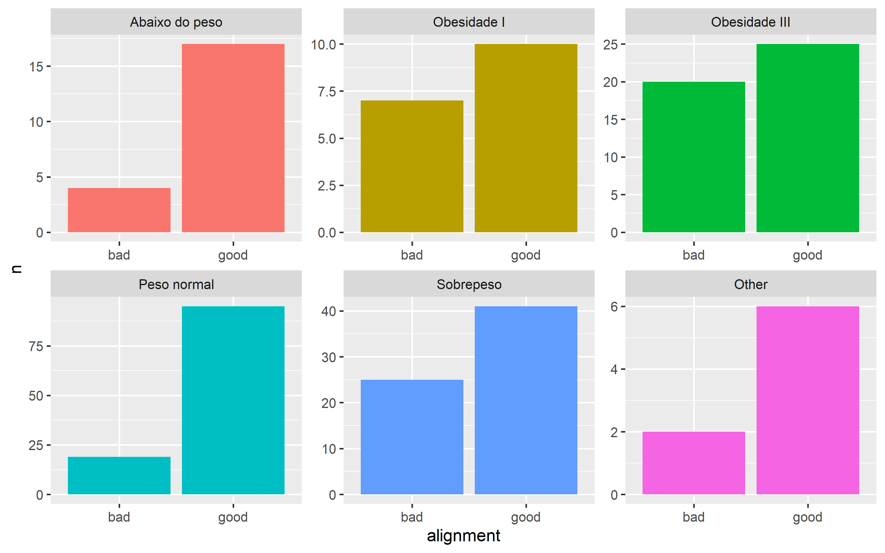
Parece que os personagens classificados como “good” têm uma tendência a serem mais “fit”. Portanto, vou optar por manter essa coluna no conjunto de dados.
dados_naive %>%
count(alignment,as.character(uncommon_power)) %>%
ggplot(aes(alignment,n))+
geom_col(show.legend = FALSE)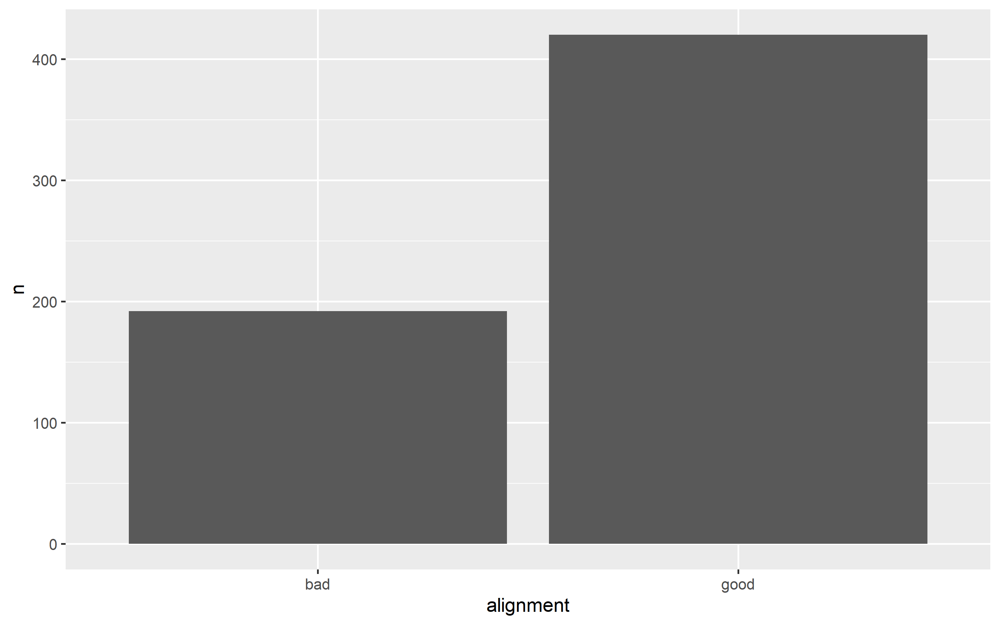
Não apresentarei todos os resultados, mas parece que os tipos de poderes não fornecem informações significativas sobre o alinhamento dos personagens.
Agora vamos examinar como o nosso alvo se relaciona com os valores numéricos.
dados_naive %>%
drop_na() %>%
ggplot(aes(alignment,height, color=alignment))+
geom_boxplot()+
theme(legend.position = "none")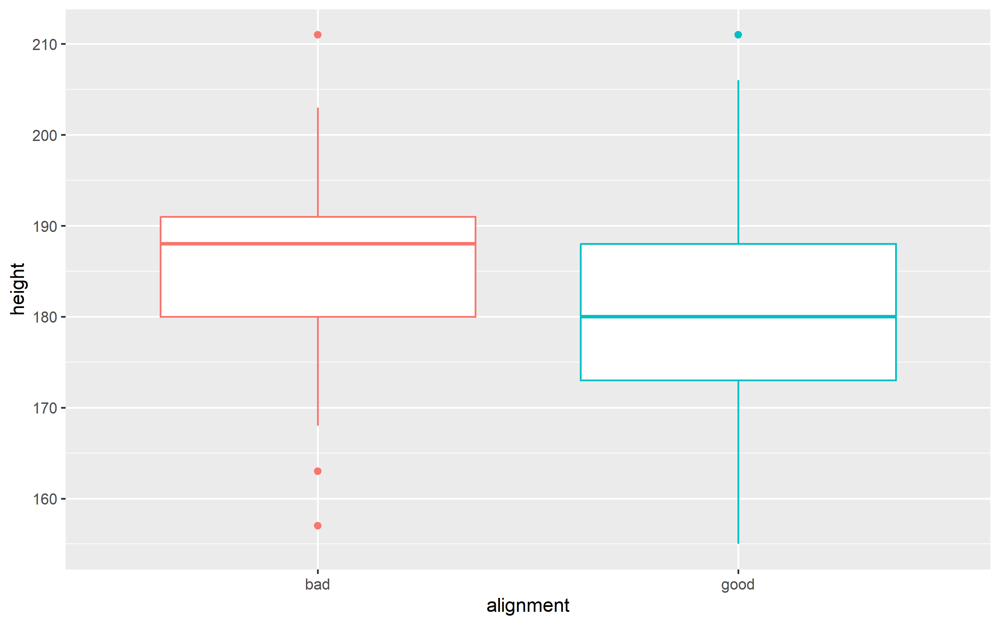
Os valores da categoria “bad” possuem uma média mais elevada, alinhando-se com o intervalo interquartil superior dos indivíduos classificados como “good”. No entanto, os intervalos interquartis das duas distribuições apresentam sobreposição. Portanto, as considerações feitas anteriormente sobre os testes estatísticos permanecem relevantes para essas análises, e recomenda-se sua aplicação visando à obtenção de resultados mais robustos.
Os dados ainda exibem valores outliers!
dados_naive %>%
drop_na() %>%
ggplot(aes(alignment,weight, color=alignment))+
geom_boxplot()+
theme(legend.position = "none")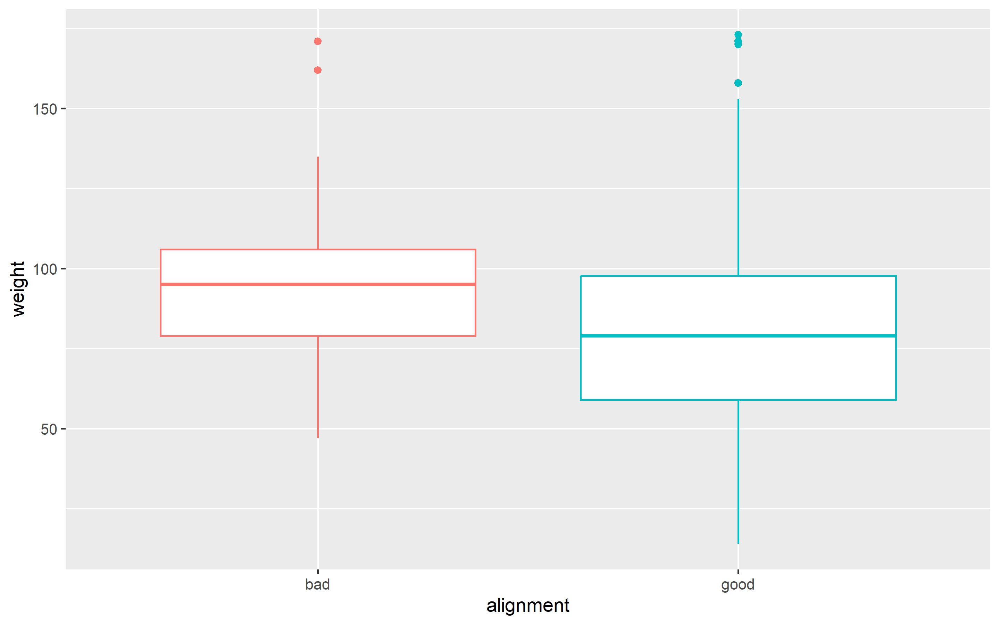
Esses resultados são bastante similares aos obtidos anteriormente.
dados_naive %>%
drop_na() %>%
ggplot(aes(alignment,imc, color=alignment))+
geom_boxplot()+
theme(legend.position = "none")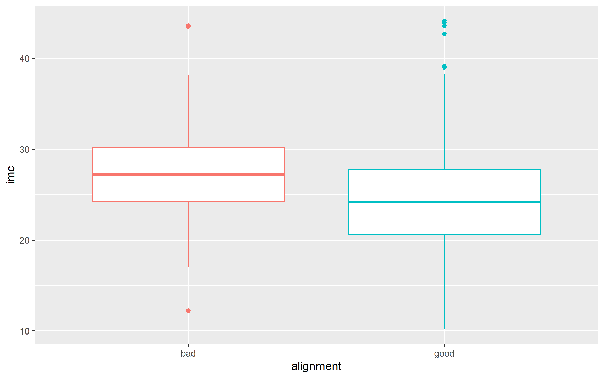
O mesmo…
dados_naive %>%
drop_na() %>%
ggplot(aes(alignment,n_poderes, color=alignment))+
geom_boxplot()+
theme(legend.position = "none")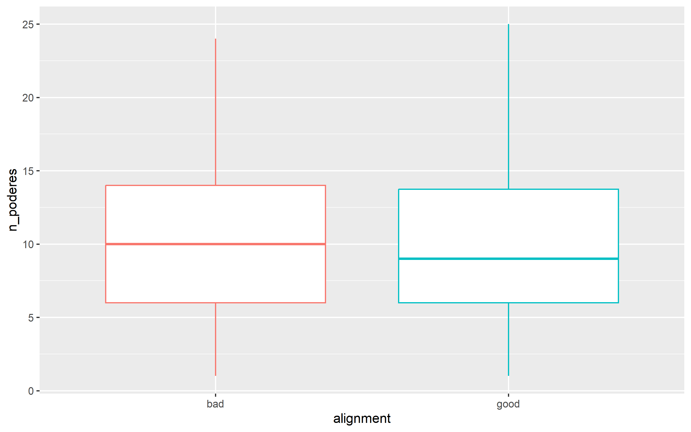
Parece que não há diferença significativa para a variável número de poderes. Portanto, não será considerada.
Divisão Treino/Teste
Antes de realizar a divisão dos dados, vou eliminar as variáveis relacionadas ao tipo de poder. Acredito que será mais conveniente fazer isso neste momento.
dados_naive <-
dados_naive %>%
dplyr::select(where(~!is.logical(.)))Vamos proceder com a divisão dos dados em uma proporção de 70% para treinamento e 30% para teste, mantendo uma distribuição apropriada do alvo em ambos os conjuntos.
set.seed(6923)
heroes_split <- initial_split(dados_naive, strata = "alignment", prop = 0.7)
train <- training(heroes_split)
test <- testing(heroes_split)Vou criar os “folds” para realizar a validação cruzada dos dados. Utilizando os dados de treino e mantendo a proporção da variável alvo.
set.seed(3344)
cv_folds <-
vfold_cv(data = train,v = 10,strata = "alignment")
cv_folds# 10-fold cross-validation using stratification
# A tibble: 10 × 2
splits id
<list> <chr>
1 <split [384/44]> Fold01
2 <split [384/44]> Fold02
3 <split [384/44]> Fold03
4 <split [384/44]> Fold04
5 <split [386/42]> Fold05
6 <split [386/42]> Fold06
7 <split [386/42]> Fold07
8 <split [386/42]> Fold08
9 <split [386/42]> Fold09
10 <split [386/42]> Fold10Especificações do modelo
Vou elaborar as especificações do modelo, que será o Naive-Bayes, para executar a tarefa de classificação.
nb_model <-
naive_Bayes() %>%
set_mode("classification") %>%
set_engine("klaR")Especificações dos dados
Agora vou elaborar as diretrizes que serão empregadas para o processamento dos dados.
Neste estágio:
Eliminação da coluna “peso”, pois apresenta uma correlação significativa com o índice de massa corporal (IMC).
Remoção do número de poderes, uma vez que não contém informações úteis.
Os tipos de poder já foram excluídos, pois também não são esclarecedores.
Tratamento dos valores ausentes nas colunas categóricas.
Consolidação das classes com baixa frequência em uma categoria denominada “other”.
Abordagem para lidar com valores ausentes nas variáveis numéricas.
Padronização dos valores numéricos.
Aplicação da codificação “one-hot” para as variáveis categóricas.
Eliminação de colunas com variância próxima a zero e aquelas de baixa frequência.
Implementação do método de upsampling para mitigar o desequilíbrio nas classes do nosso alvo.
heroes_rec <-
recipe(alignment ~ .,data = train) %>%
step_rm(name,weight, n_poderes, height, imc) %>%
step_impute_knn(all_nominal_predictors(), neighbors = 5) %>%
step_other(all_nominal_predictors(), threshold = 0.1) %>%
step_impute_mean(all_numeric_predictors()) %>%
step_normalize(all_numeric_predictors()) %>%
#step_BoxCox(all_numeric_predictors()) %>%
step_dummy(all_nominal_predictors(), one_hot = TRUE) %>%
step_nzv() %>%
step_upsample(alignment)
heroes_rec %>% prep() %>% bake(new_data = NULL)# A tibble: 588 × 45
agility accelerated_healing durability stealth energy_absorption flight
<dbl> <dbl> <dbl> <dbl> <dbl> <dbl>
1 -0.776 -0.573 -0.791 -0.483 -0.347 -0.645
2 -0.776 -0.573 -0.791 -0.483 -0.347 -0.645
3 -0.776 1.74 -0.791 -0.483 -0.347 -0.645
4 -0.776 -0.573 -0.791 -0.483 -0.347 -0.645
5 -0.776 1.74 -0.791 -0.483 -0.347 1.55
6 1.29 -0.573 1.26 -0.483 -0.347 1.55
7 -0.776 -0.573 -0.791 -0.483 -0.347 1.55
8 -0.776 -0.573 1.26 2.07 -0.347 -0.645
9 -0.776 -0.573 1.26 -0.483 -0.347 -0.645
10 -0.776 -0.573 -0.791 -0.483 -0.347 -0.645
# ℹ 578 more rows
# ℹ 39 more variables: marksmanship <dbl>, weapons_master <dbl>,
# longevity <dbl>, intelligence <dbl>, super_strength <dbl>, telepathy <dbl>,
# energy_blasts <dbl>, stamina <dbl>, super_speed <dbl>, teleportation <dbl>,
# enhanced_senses <dbl>, immortality <dbl>, reflexes <dbl>,
# invulnerability <dbl>, force_fields <dbl>, enhanced_hearing <dbl>,
# uncommon_power <dbl>, alignment <fct>, gender_Female <dbl>, …Criando um fluxo de trabalho
Vou estabelecer o fluxo de trabalho utilizando as diretrizes definidas para o modelo e para o tratamento dos dados.
heroes_wf <- workflow() %>%
add_recipe(heroes_rec) %>%
add_model(nb_model)Ajustando o modelo
Vou ajustar o modelo aos dados de treinamento, utilizando os “folds” criados.
nb_fit <-
heroes_wf %>%
fit_resamples(
resamples = cv_folds
)
collect_metrics(nb_fit)# A tibble: 2 × 6
.metric .estimator mean n std_err .config
<chr> <chr> <dbl> <int> <dbl> <chr>
1 accuracy binary 0.630 10 0.0296 Preprocessor1_Model1
2 roc_auc binary 0.672 10 0.0284 Preprocessor1_Model1Realizando previsões nos dados de teste.
nb_final <- heroes_wf %>%
last_fit(
split = heroes_split
)
collect_metrics(nb_final)# A tibble: 2 × 4
.metric .estimator .estimate .config
<chr> <chr> <dbl> <chr>
1 accuracy binary 0.598 Preprocessor1_Model1
2 roc_auc binary 0.626 Preprocessor1_Model1nb_test_pred <- bind_cols(
test,
nb_final %>% collect_predictions() %>% dplyr::select(starts_with(".pred_"))
)Avaliando os resultados
table("predicted class" = nb_test_pred$.pred_class,
"observed class" = nb_test_pred$alignment) observed class
predicted class bad good
bad 28 44
good 30 82O modelo apresentou um desempenho insatisfatório, especialmente na previsão dos indivíduos classificados como “bad”, onde o número de erros é superior ao de acertos. Isso mostra um viés para a categoria good, que é a classe dominante nos registros. Vale ressaltar que um dos passos que realizei durante o preprocessamento dos dados foi a etapa de “upsampling” com o objetivo de melhorar o equilíbrio entre as classes.
nb_test_pred %>%
roc_curve(
truth = alignment,
.pred_good
) %>%
autoplot()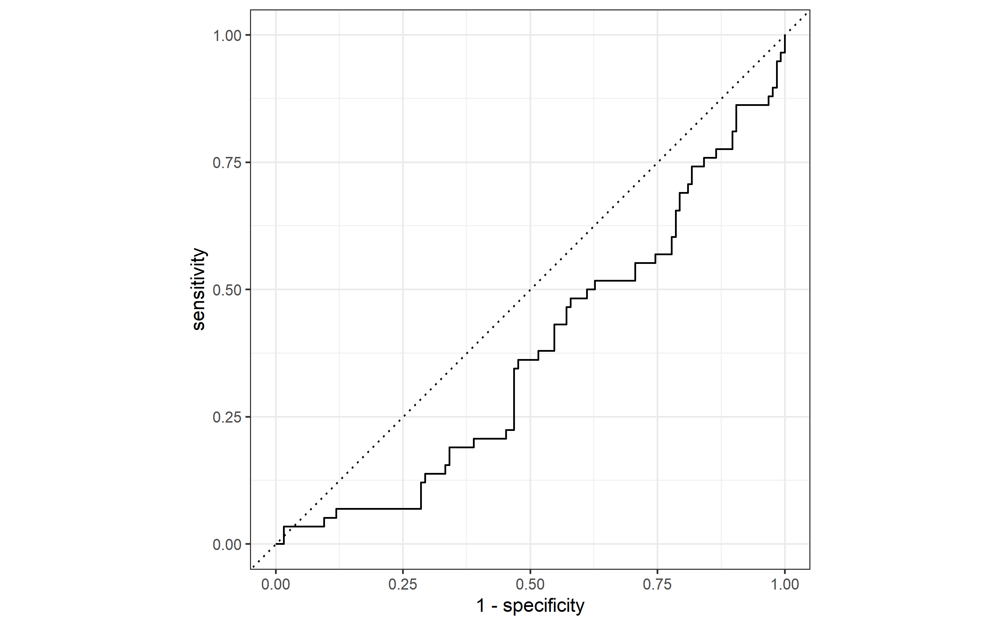
nb_test_pred %>%
roc_curve(
truth = alignment,
.pred_bad
) %>%
autoplot()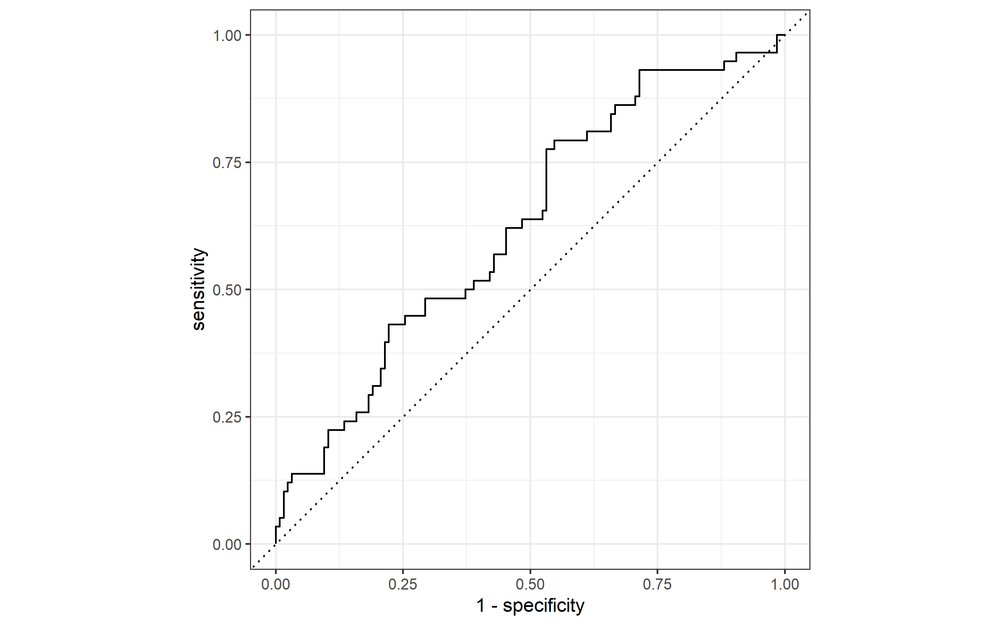
Os resultados das curvas ROC indicam que, no que se refere aos valores da categoria “good”, o modelo não apresenta um desempenho significativamente melhor do que um palpite aleatório. Por outro lado, em relação à categoria “bad”, o modelo está produzindo resultados contrários ao esperado, resultando em erros substanciais de classificação.
Modelo da minha escolha
Optei pelo modelo XGBoost pelas razões que serão detalhadas na seção de justificativas.
Especificações do modelo
Aqui, utilizei funções que automatizam a afinação de hiperparâmetros, como o número de árvores, o número de pontos por nó e a quantidade de preditores que serão selecionados aleatoriamente em cada divisão durante a criação dos modelos de árvore.
xgb_spec <-
boost_tree(
trees = tune(),
min_n = tune(),
mtry = tune(),
learn_rate = 0.01
) %>%
set_engine("xgboost") %>%
set_mode("classification")Criando um fluxo de trabalho
Para estabelecer o fluxo de trabalho, vou empregar a mesma abordagem que foi criada para o modelo Naive-Bayes, realizando modificações apenas nas especificações destinadas ao modelo em questão.
xgb_wf <-
workflow(heroes_rec,xgb_spec)Como os folders de cross validação já foram criados podemos ir diréto para o ajuste do modelo.
Para realizar a afinação dos hiperparâmetros do modelo, vou empregar a função tune_race_anova(), a qual utiliza um método RACE que elimina os modelos que não estão apresentando bom desempenho. Vou usar um valor de 30 para o grid search
#library(finetune)
doParallel::registerDoParallel()
set.seed(963)
xgb_rs <-
finetune::tune_race_anova(
xgb_wf,
resamples = cv_folds,
grid = 30,
control = control_race(verbose_elim = TRUE)
)
xgb_rs# Tuning results
# 10-fold cross-validation using stratification
# A tibble: 10 × 5
splits id .order .metrics .notes
<list> <chr> <int> <list> <list>
1 <split [384/44]> Fold01 3 <tibble [60 × 7]> <tibble [0 × 3]>
2 <split [384/44]> Fold04 1 <tibble [60 × 7]> <tibble [0 × 3]>
3 <split [386/42]> Fold08 2 <tibble [60 × 7]> <tibble [0 × 3]>
4 <split [386/42]> Fold10 4 <tibble [54 × 7]> <tibble [0 × 3]>
5 <split [386/42]> Fold05 5 <tibble [54 × 7]> <tibble [0 × 3]>
6 <split [384/44]> Fold02 6 <tibble [52 × 7]> <tibble [0 × 3]>
7 <split [386/42]> Fold09 7 <tibble [50 × 7]> <tibble [0 × 3]>
8 <split [386/42]> Fold06 8 <tibble [44 × 7]> <tibble [0 × 3]>
9 <split [384/44]> Fold03 9 <tibble [40 × 7]> <tibble [0 × 3]>
10 <split [386/42]> Fold07 10 <tibble [32 × 7]> <tibble [0 × 3]>avaliando os resultados
plot_race(xgb_rs)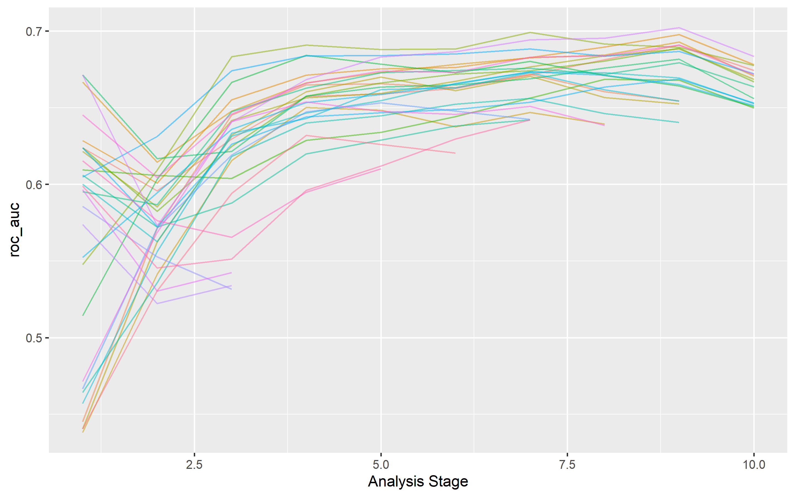
collect_metrics(xgb_rs)# A tibble: 32 × 9
mtry trees min_n .metric .estimator mean n std_err .config
<int> <int> <int> <chr> <chr> <dbl> <int> <dbl> <chr>
1 1 1417 24 accuracy binary 0.663 10 0.0205 Preprocessor1_Mode…
2 1 1417 24 roc_auc binary 0.674 10 0.0254 Preprocessor1_Mode…
3 4 1743 27 accuracy binary 0.654 10 0.0215 Preprocessor1_Mode…
4 4 1743 27 roc_auc binary 0.678 10 0.0272 Preprocessor1_Mode…
5 6 496 30 accuracy binary 0.642 10 0.0248 Preprocessor1_Mode…
6 6 496 30 roc_auc binary 0.671 10 0.0274 Preprocessor1_Mode…
7 10 647 21 accuracy binary 0.659 10 0.0174 Preprocessor1_Mode…
8 10 647 21 roc_auc binary 0.669 10 0.0278 Preprocessor1_Mode…
9 12 849 13 accuracy binary 0.668 10 0.0174 Preprocessor1_Mode…
10 12 849 13 roc_auc binary 0.677 10 0.0263 Preprocessor1_Mode…
# ℹ 22 more rowsSelecionando o melhor resultado obtido a partir do processo de ajuste de hiperparâmetros, vou utilizá-lo para realizar o ajuste final do modelo aos dados.
xgb_last <-
xgb_wf %>%
finalize_workflow(select_best(xgb_rs, "accuracy")) %>%
last_fit(heroes_split)Vou avaliar novamente as métricas de desempenho do modelo.
collect_metrics(xgb_last)# A tibble: 2 × 4
.metric .estimator .estimate .config
<chr> <chr> <dbl> <chr>
1 accuracy binary 0.592 Preprocessor1_Model1
2 roc_auc binary 0.646 Preprocessor1_Model1collect_predictions(xgb_last) %>%
conf_mat(alignment,.pred_class) Truth
Prediction bad good
bad 32 49
good 26 77Lamentavelmente, este modelo não demonstrou uma melhoria significativa em relação ao anterior. É provável que eu devesse reconsiderar as características selecionadas para a modelagem.
Avaliando os recursos mais importantes.
Agora, vamos investigar quais variáveis estão sendo consideradas as mais importantes pelo modelo. Isso nos permitirá compreender quais características estão exercendo maior influência nas previsões e pode nos fornecer insights para melhorar o desempenho do modelo.
#caminho_arquivo <- "C:/Users/marin/Downloads/vip_0.4.0.tar.gz"
#install.packages(caminho_arquivo, repos = NULL, type = "source")
library(vip)
xgb_last %>%
extract_fit_engine() %>%
vip()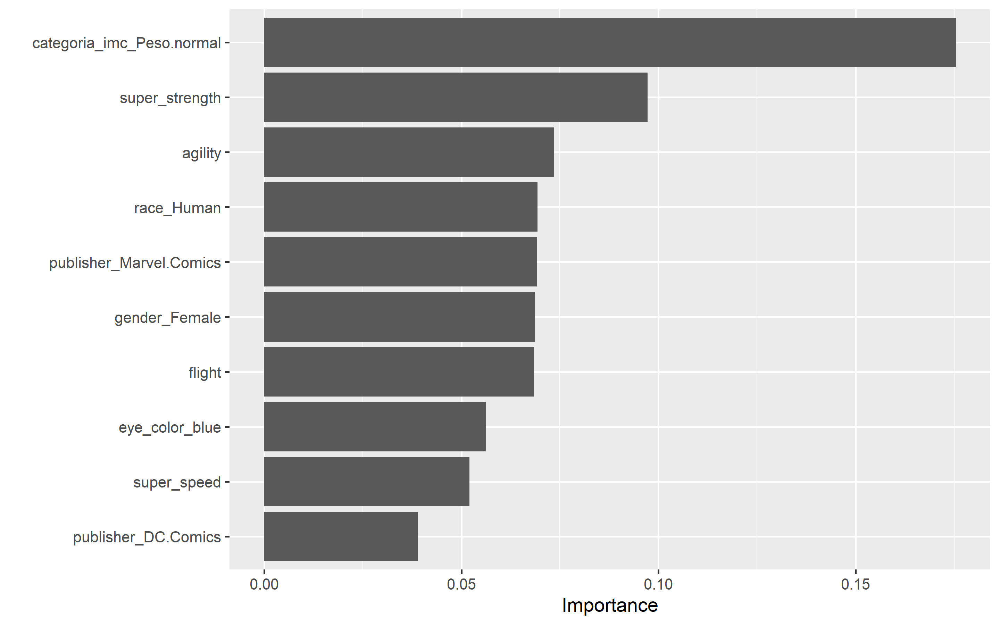
Após a realização de testes…
As variáveis que se destacam como mais relevantes são IMC e altura. No entanto, elas não pareciam tão informativas durante a EDA. Teria sido prudente realizar algum teste estatístico para verificar isso.
Vou agora remover essas variáveis e verificar se há alguma melhoria nos modelos…
Após a eliminação das colunas mencionadas, os resultados estão sugerindo que o peso dos personagens desempenha um papel importante. Lembrando que IMC e peso são altamente correlacionadas. (O modelo não melhorou).
Uma alternativa adicional, que não foi explorada, é ajustar o modelo utilizando somente as variáveis mais relevantes que foram identificadas. Isso poderia nos fornecer uma abordagem mais focada e possivelmente resultar em um melhor desempenho do modelo.
Respostas
- Quais hipóteses assumimos ao usar o algoritmo Naive Bayes?
A premissa fundamental do Naive Bayes é a suposição de independência entre as características (atributos), condicionada ao valor da classe. Isso implica que a existência ou ausência de uma característica não é influenciada pela presença ou ausência de outras características.
Outras suposições incluem a igual relevância de todas as características para a classificação.
(Nenhuma delas foi atendida pelos dados utilizados)
- Como as características específicas deste conjunto de dados influenciam suas escolhas e resultados de modelagem?
Confesso que a pergunta não ficou muito clara para mim… No que diz respeito aos resultados da modelagem, eles impactam de forma desfavorável. Além de não atenderem aos pressupostos do modelo, também estão repletos de desafios, como valores ausentes e desequilíbrio entre as classes.
- Como você avalia os resultados?
Os resultados não foram favoráveis, resultando em um modelo tendencioso.
- Agora sinta-se à vontade para executar o algoritmo de classificação que julgar mais adequado para essa tarefa.
O que motivou sua escolha do algoritmo?
Minha escolha foi o algoritmo XGBoost, uma ferramenta poderosa e versátil. O XGBoost tem a capacidade de criar modelos complexos capazes de capturar relações não-lineares entre as características. Este algoritmo é eficaz ao lidar com diversos tipos de dados e demonstra robustez em relação a valores discrepantes (outliers) e classes desbalanceadas. Além disso, o XGBoost incorpora mecanismos internos para tratar valores ausentes, o que reduz a necessidade de pré-processamento intensivo. Em resumo, essa escolha se alinha com várias características do conjunto de dados em questão, tornando o XGBoost uma opção indicada.
- Como esse algoritmo se compara ao Naive Bayes em relação às suposições e resultados da modelagem?
O XGBoost não faz suposições específicas sobre a distribuição dos dados. Ele constrói modelos complexos que podem se ajustar a padrões variados.O Naive Bayes faz suposições sobre a independência condicional entre recursos, o que pode não ser verdadeiro em todos os casos. Essas suposições podem afetar seu desempenho em dados complexos.